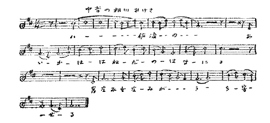
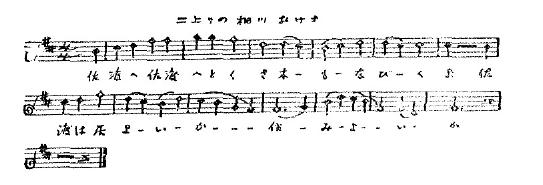
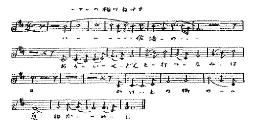
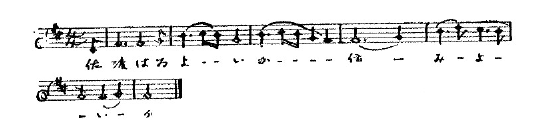
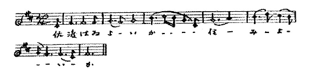
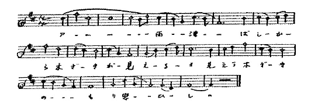
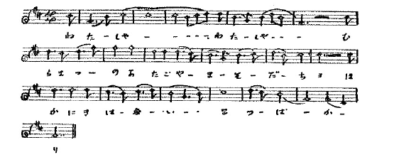
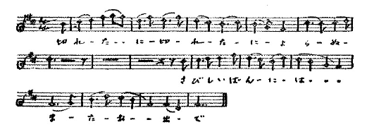

越後が本家であると言はれるおけさ節の朝から晩まで聞ける相川は、毎年七月十三、十四、十五と三日續いての鑛山まつりに、全島のお祭好きを呼び集めます。此時には遙遙海を越えた新潟縣からも、或は祭見に、或は踊りに來る人があります。ほんとうの盆は舊暦ですからこれよりも後になりますが、これはほんのおしるしだけでして、相川の町ではこの鑛山祭を盆と呼んで居ります。
本來鑛山の祭は正月に寳莱祭と言ふのがあり、このときには式場で山で一番の聲の持主が「やはらぎ」、「金山節」、「金堀節」、或は「寳莱節」と言ふのを歌ふ例になつて居り、此外にほんとうの盆に、奉行所の前で、武家も町人も大人も子供も、それぞれ割合てられた［＃「割合てられた」はママ］時刻に、輪を作つて「御前踊」と言ふのを「相川音頭」或は「御前音頭」と言ふ節に合せて踊つたと言ふ、この二つだけだつたさうです。
奉行所が御料局になつてからは、盆の踊だけが町中を流して踊るものとなり、歌は前に出した五十位の女の覺えてゐたのを聞いたと書いたあの二種のやうな節のおけさで、踊は今日殘つてゐるものとも違ふ型のものだつたのださうです。
それが更に、御料局から三菱の手に鑛山を拂下げるやうになつてから、今日の鑛山祭と言ふものが出來、ほんとうの盆が段段と消滅したのださうです。
で、この七月十三日と言ふ日は、鑛山が三菱の手に移され、宮内省から町へ手切金を下賜された記念日なのです。
此日には町の小學校は休みになり、中學も半休みになり、鑛山には東京の藝人などが來て、その他色色の催物があります。町の家には各戸にお客樣が泊り込んで居り、臨時の飮食店も出來、佐渡全島の［＃「佐渡全島の」は底本では「佐度全島の」］藝妓が集まりますので臨時のおき家も出來ます。勿論歌ふ歌はおけさ、それが全島からのですから色色の節くせを持ち込んで來るのです。來る方では相川のを覺えて持つて歸らうと思つて來るのでせうけれども、さう言ふ祭にはとても純粹のものは持つて歸れません。うろ覺えの儘藝者と素人とが銘銘の古巣へ持ち歸つた土産が、銘銘の土地に今迄何處にもなかつた新らしい節を造り出します。それが又來る年の祭までに圓熟して、更に輸入される。それが毎年毎年繰返されるために、相川の節は年年變化して行き、そして粹を拔いたものになるので、從つて相川のおけさは總べてのおけさの花となる譯なのです。
それに、相川のやうに、藝者にしても、町民にしても、おけさばかりを歌つてゐる處はありますまい。それが殊にほかの土地の人よりも多く歌ふ人達なのですから、おけさそのものに變化が無ければとても續かない譯です。相川のおけさを極く粗い譜に取つたのが、私の手に二百近くあります。これに個人のくせや何かを入れたら殆ど無限の節數になりませう。悲しければおけさ、嬉しければおけさ、何につけても人間の心持に共鳴してくれる節を供へてゐるのです。
しかし、私は丁度いい時に居たやうな氣がします。相川と言ふ、新潟から艀のやうな船で行つて、島を横切つて、更に峠を越え、トンネルをくぐらなければ行けない、日本海の眞ん中で西比利亞の方に向いてゐる町、まだ不自然な馬鹿げた自殺的な文明の毒のために人の生活が亡びてゐない町、まちがつた文明の方向に入り込んでゐないから、いきなり來るべき世界に飛び込める青年を澤山に用意してある町。斯う言ふ町にも、多くの他の田舍の小都會同樣、僅かの智識を鼻にかけて純朴な自然を破壞する人達がゐるのです。御當人は皆やはり愛すべき人達なのです。尊敬すべき人達なのです。けれどもさう言ふ人達が、丁度日本人でありながら、日本人の平等な心持を知つてゐる筈の愛すべき人達でありながら、西洋の本を讀んでいきなり、日本の實際も文學も歴史も忘れて、藝娼妓、紳士の戀の對稱となりうる、决して魂の腐つて居ない、决して奴隷でない、西洋人が實地に當つて驚くほど羞恥心も道徳心も立派に持つてゐる娘さんを、醜業婦と呼んだ人達のやうに、藝者の左褄を禁止して見たり、頭に帽子の代に手拭を載せるのを叱つて見たり、自然の發達した當字をよさすことに苦心して見たりするおかみの人達のやうに、色色な改良意見をおけさに對して持つて居りまして、或は「
今のところはまだ色色の節が歌はれて居ますので、その中から高い調子のと低い調子のと中位のものと三種だけの譜を左に書きました。高いのは鑛山の女の節だと言はれて居ります。中位のは藝者や町の多くの人に歌はれて居ます。低いのは鑛山の男の節です。
相川のおけさが、外の土地と異つた特色の大事な點は藝者の喉や三味線を離れて成長して來てゐる點です。その點は節ばかりで無く、聲そのものにあります。いかにも素朴なつくつた點の一つもない、初めから調子外れの大聲で無茶苦茶に歌つて出來た聲です。裏をつかつたり、盜んだり、鼻へかけたり、わざと喉をころがしたり、そんな意識的な點を一つも持たない聲です。



此三つの節の中で二上り調子の高いのが一番古く、中音のが私が島に行つた時分から來る頃まで行はれてゐた節です。いづれにしても
 は八十四位です。今ではまた此一下り調子の低い音ら［＃「音ら」はママ］引き上げたやうなのが流行りかけて居ます。それは
は八十四位です。今ではまた此一下り調子の低い音ら［＃「音ら」はママ］引き上げたやうなのが流行りかけて居ます。それは
とか、

とか歌ふのです。

と、斯う言つた調子です。
村松の人から、村松おけさと言ふのを聞きましたが、まるで佐渡のものと感じが違つて居りました。譜で書きますと、

よく注意して見ると、鑛山の男ぶし、――相川の一番低い調子のおけさ――前に出した今年三十になる女の子供の折の節と出が似て居りますし、中及び下の部分は鑛山の女ぶし――一番高い調子の相川おけさ――ヤーレ、ヤーレマの這入る古いおけさに似てゐます。同じ相川でも遊廓では斯んな節もあります。

字の足りない歌のうたひ方です。
字足らずにはいい文句があります。
思ひ切りや切れるよかねの鎖も切りや切れる
など言ふ歌は字が足りてはならない歌だと思ひます。其他の歌――
佐渡と越後は竿さしや届く橋をかけたや船橋を
勿論越後に向つた小木の方の歌です。「何故に届かぬわが思ひ」とも歌ひます。
佐渡で搗く餅越後でならす佐渡と越後はひとねばり
「飾つきや」とも、「越後でこねる」とも歌ひます。
金があるとて高慢ぶるな佐渡ぢやみみずがふんに出す
今でも相川の濱邊には瑪瑙や紫石英、赤玉、などと交つて、鑛石が落ちて居ります。三菱が山を引受けてから、慶長以來の捨て鑛を濱から拾ひ、家の屋根の上の板を押へるために載せてゐる石を買ひ取つて、精錬したさうです。
あひが吹かぬか荷が無うて來ぬか但しや新潟 の川留か
あひの風は相川では東北北の風、小木邊では東南の風です。
空のよいときや新潟が見える殿はにがたの川裾に
澤根通れば團子が招く團子招くな錢はない
澤根が佐渡の西の船着場、兩津――昔の夷と湊――が東の、小木が南の船着場になつて居ります。小木は今では昔の女郎屋が料理屋に變つて來ました。兩津は今なほ遊廓町です。澤根は近くに二見と言ふ遊廓町を控へて居るので正式の遊女は居りません。此頃から今ではほんとうに胃の腑を滿たす澤根團子と言ふ名物が出來て居ります。澤根通れば團子が招く團子招くな錢はない
酒は酒屋に團子は茶屋に女郎は相川の市町に
と言ふ歌もあります。
來るか來るかと上沖見れば矢島經島影ばかり
面の憎いは澤崎鼻だ見たい帆影をはやう隱す
これらは小木全盛時代の遺物です。今でも小木の鎭守の社の前には道祖神とならんだ數個の陰陽石に捧げものが絶えません。毎年六月三十日にその社で輪くぐりと言ふものを町の男女にやらせます。男は神殿にある輪をくぐつたら右へまはつて歸る、女はその反對にまはると言ふので、全町の人が其れをやりに行きます。輪はわらで造つて杉の葉で飾つたものです。社は木崎神社と言つて、小木のそとのま、内のまの二つの港のまん中に突き出した半島にあつて、祭神は此花咲耶姫だと言ふ事です。此祭の晩に必ず買はなければならないものは「あやめ團子」と「あぶり餅」です。「あやめ團子」は小さな團子四つを串にさして葛でどろどろに溶いた醤油をつけたものです。「あぶり餅」は菱形の串にさした燒餅でして、これには醤油のほかに黒砂糖を加へてやはり葛で溶いた汁をつけます。面の憎いは澤崎鼻だ見たい帆影をはやう隱す
水は水だがうぶすなのそえかえびす女に戸地男（そえはせえの意）
この狄は北狄と言ふところでして、とぢと何れも佐渡の北側にあります。東側の夷とはちがひます。東側の夷は殆んど完全に日本化して居りますが、相川以北の所謂海府地方ではまだ全然人種の違つた、昔のえびすらしい人達が住んで居ます。えびす女にとぢ男、何れも此邊の人は、同じ島でも小木邊の人とは全然違つて、鼻筋が通つた、美しい筋骨を持つた、眼の引つ込んだ、眉毛の長い、脊の高い人達です。どんな肌のなめらかさも、髮の毛の美しさも、骨格と筋肉との持つてゐる力に比べると木つぱのやうなものだと言ふことを、私は佐渡へ行つてはじめて經驗しました。利口さやリフアインさでは無い、炎天の水、饑ゑたときの食物のやうな力で、反省の暇がない位力強く生命そのものを引きつけるのは生きた健康です。美では無い力です。筋肉です。骨格です。想像や夢の生んだ戀で無く戀することの出來る女、そして結婚して男を饑ゑさせない女、疑はずに男を愛しうる女。
いやきやさればおけ主のやうなかぼちや一つ種蒔きや千もなる
男に奴隷のやうにこびりついて上べだけの自由を欲して我儘を言ふ他國の文明人とはちがつた處があります。
可愛い男は百尋たつ沖で烏賊を取るやら眠るやら
烏賊釣りは潮時がありますので、星を時計の代りにして、釣れる時釣れる時のあひまに小舟の上で眠るのです。
可愛い男はみな下通ひに下に松前なきやよかろ
下は北海道方面です。
殿がかあいけりや乘るかごまでも濱に据ゑおく船までも
これは小木の歌でせう。
見送りましよとて濱まで出たが泣けてさらばが言へなんだ
泣いてくれるな出船の時にや綱も碇も手につかぬ
これも港の歌です。泣いてくれるな出船の時にや綱も碇も手につかぬ
殿が炭たきやわしや幌かけに殿がばいた切りや枝そぎに（ばいたは薪です。）
山で木を切る音なつかしや殿が炭たく山ぢやもの
北は大佐渡南は小佐渡中は國なか米どころ
海産物のほかには炭と米と竹と牛肉などを輸出します。牛飼ひはおけさには出て來ませんが、全島の山に放牧してあります。時時牛が山犬に食はれた噂をききます。犬が牛を食はうとするときには、牛の脊にまづ飛び上がります、そして尻尾に近いところに食ひつくのです。さうすると牛はこれを逐はうとしてぐるぐる回り出します。牛と言ふやつは妙な動物でして、一旦何か爲事を始めると途中で中止してほかの事をすることが出來ないで、だらしなく同じ事を爲續ける動物です。五六回ぐるぐるまはりをやるとあとは何十分でもぐるぐる囘り續けるのです。段段加速度になつて來る、それでも止めない。仕舞には眼が眩んで倒れる。それまで犬は背中で待つて居て、周圍で舌を出し腰を下ろして勇者の放れ業を見物してゐた友人達と一しよに盛宴を張るのです。山で木を切る音なつかしや殿が炭たく山ぢやもの
北は大佐渡南は小佐渡中は國なか米どころ
斯う言ふ野犬を驅り立てる段になると流石に人間の方が偉いやうです。大勢の村民が得物を持つて澤山の野犬を岩のごつごつした谿間に追ひ込む。犬は必死になつて人間に飛びかかる。けれども人間の手には得物がありますのでぢかに飛び付けない。頭の上を飛び越すのです。人間は低いところに居て犬の飛ぶに連れて犬に背を向けないやうにくるくる方向を轉換して居れば可いのですが、流石に人間は目をまはすやうな回り方をしませんので、卻つてしまひには犬の方が疲れて目が眩んで來るのです。勿論人間は一人も喰ひ付かれたものは無く、岩角で擦剥いたり茨で裂かれたりした傷位をお土産にして歸つて盛宴を張るわけです。
佐渡の牛は本來のものは黒牛ださうです。雜種はすべて南部牛と言つて居りますが、繁殖の方法も放牧中の自由に任して人工的方法を用ひないのですから、全島を通じて同じ樣な體格になつて居ります。第一に眼につくのは全體の小柄なこと、胸に垂れ下つた皮の無いこと、腹から腰へかけてことに引きしまつてゐること、足の早いこと。よほどの急な勾配を平氣で上下して居ります。
時には潮の引いた淺い海を渡つて岸近くの島に渡つて夕方になつて歸れなくなつて陸の方を眺めて鳴いてゐるのもあります。時には突き出した崖から谷底に滑り落ちて死ぬのもあります。持ち主に知らせるにしても斷崖は上れません、茨は着物を裂いてしまひますから、さう言ふ牛は落ちた谷の附近の住民の臨時の御馳走になるのです。
斯う言ふ、牛が何里先まで行つて草木を喰べようと、人が何處へ行つて焚木を拾はうと、誰にも文句を言はれない、周圍五十三里の自然も、全島を占めてゐた御料林を昨年縣に拂下げた時から、せせこましい日本の土地になつて來るやうになつて來て居ります。山の樹を荒らすと言ふので、一九二七年からは六月一日からでないと放牧してはならぬ、五年後には放牧一切罷りならぬと言ふことになつて來て居ります。
齒磨を使はないで、背中を爪でかいて、月拾何圓の生活費で、色の褪めた着物を着て、それで健康と安心とに生きてゐる佐渡人を、抽象的な虚榮、贅澤を以つて都會人の域まで退化さすことが、いくら日本が貧乏でも小さなたつた一つの此島にまで、必要でせうか。尠くなくとも魂の公園としてこの位のものは一箇處保存して置きたいと思ふ。佐渡生まれのおめでたい識者が、縣廳などの單に形式的の物質的の表面的の功利を以つて上役に引立てて貰ふための有毒な宣傳に載せられて、又自分達の虚榮から、島民が苦しんで體裁を作り、更に進んでは都會育ちの化物のやうに寒さにも暑さにも堪へる力を失ひ、少し暗いと眼が利かなくなり、跣足では一歩も歩けないまで退化して、一生を不愉快に過ごすやうにさせて行くことを、單に収入と支出とが増加することを、そして魂が落着を失ふことを、生活が不安定になることを、富を増進さすことを信じてゐる、小利口さ、馬鹿さで、憎むべき罪惡を島民に對して犯してゐるのが、やうやく魂の故郷を見付けた氣持でゐる私に取つては、堪らなく癪でもあり苦痛でもあります。私は佐渡のほんとうの識者、學問があるとか金があるとか利口だとか言ふので無くほんとうに生きてゐる人達――さう言ふ人達はことに佐渡に澤山殘つてゐるのだから――さう言ふ人達が、すべての文化的惡宣傳に載せられず、頑固に野蠻未開を守護して文三の歸るまでやはり同じ大きな聲でおけさをうたつてゐて貰ひたいと思つて居ます。